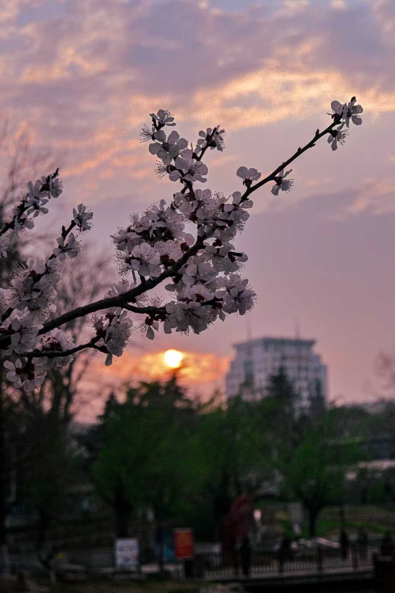
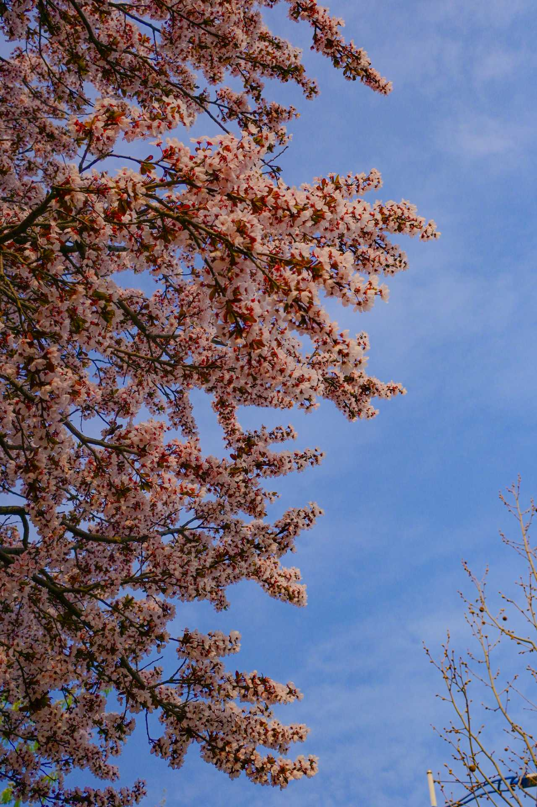
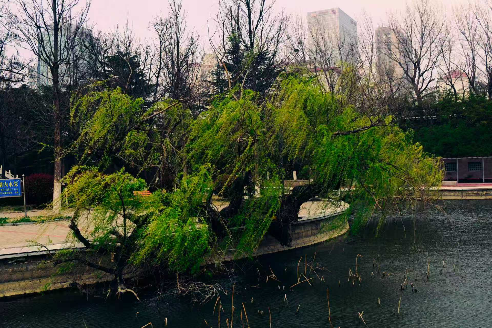

春风拂过鲁东大学的校园，每一寸土地都焕发出勃勃生机。沿着逸夫楼前的林荫道漫步，道路两旁的樱花树早已缀满了粉白的花簇，风一吹，花瓣便如雪般簌簌落下，铺成一条浪漫的花径。不远处的映月湖畔，垂柳抽出了嫩黄的新芽，细长的枝条垂在水面上，轻轻荡漾着春日的涟漪，偶尔有锦鲤跃出水面，溅起细碎的水花，为静谧的湖面添了几分灵动。图书馆前的草坪上，嫩绿的草芽从土里探出头来，点缀着星星点点的小野花，阳光洒在上面，泛着温暖的光泽，不少同学坐在草坪上读书、聊天，享受着春日的惬意。
校园的西北角，是一片郁郁葱葱的小树林，春日里更是成了鸟的天堂。麻雀、白头鹎在枝头跳跃、鸣叫，清脆的歌声回荡在林间，仿佛在演奏一曲春日的乐章。阳光透过树叶的缝隙洒下来，在地上投下斑驳的光影，走在林间小路上，呼吸着带着草木清香的空气，所有的疲惫都烟消云散。实验楼旁的花坛里，郁金香、风信子竞相绽放，红的、黄的、紫的，色彩斑斓，香气扑鼻，引来蜜蜂和蝴蝶在花丛中穿梭，构成了一幅生机勃勃的春日画卷。鲁东大学的春，是藏在每一朵花、每一片叶、每一缕风中的温柔，是属于每一个鲁东学子的浪漫与美好。


